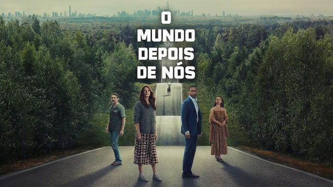
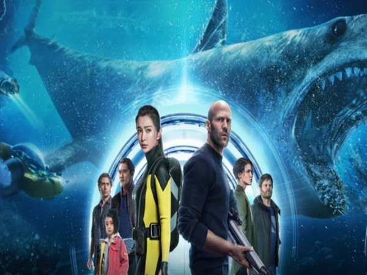
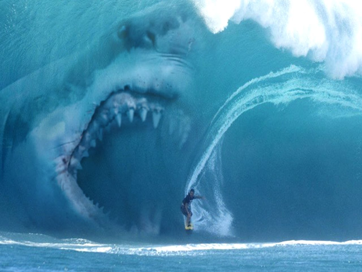
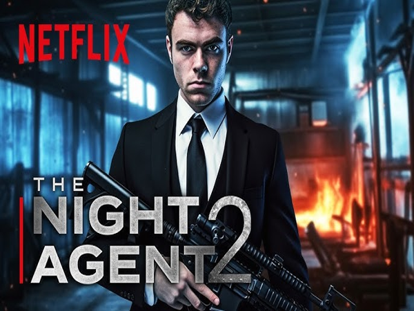
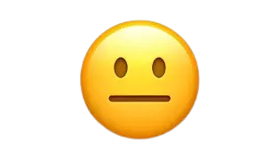
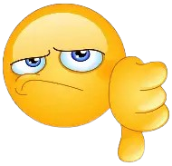
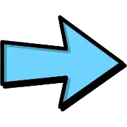

Flmes sugeridos
O Mundo Depois de Nós

"O Mundo Depois de Nós" (2023), da Netflix, é um thriller apocalíptico focado no colapso social provocado
por um ciberataque misterioso. A trama acompanha duas famílias forçadas a dividir uma casa de luxo,
explorando desconfiança, racismo velado, dependência tecnológica e a luta pela sobrevivência sem
informações.
Megatubarão


Spotify playlist
"Megatubarão" (no original The Meg) é um filme de ficção científica, ação e suspense lançado em 2018,
dirigido por Jon Turteltaub e estrelado por Jason Statham. O filme é baseado no livro "Meg: A Novel of Deep
Terror" de Steve Alten.
The Night Agent

The Night Agent" é uma série de ação e suspense que acompanha um agente do FBI de baixo escalão que, ao
atender uma ligação de emergência, se vê no centro de uma conspiração mortal envolvendo espionagem política
na Casa Branca.
Comparação:
🎬The Night Agent (série – suspense/espionagem)
É uma série de suspense e ação centrada em espionagem política.
A trama acompanha um agente do FBI que descobre uma conspiração de alto risco dentro do governo dos EUA e
precisa proteger civis e autoridades enquanto desvenda intrigas e traições.
Tom: ação contínua, tensão política, reviravoltas e mistério. Formato: série episódica com desenvolvimento
prolongado de personagens e arcos maiores.
🎥 O Mundo Depois de Nós (filme – suspense/apocalíptico)
É um filme de suspense apocalíptico sobre uma família isolada após um apagão tecnológico global causado por
um ataque cibernético.
O roteiro acompanha a tensão da falta de informação, a incerteza sobre o que está acontecendo e as relações
humanas diante do colapso social.
Tom: sombrio, ansioso, reflexivo; menos ação frenética e mais foco na atmosfera e nas reações humanas.
Formato: filme único com narrativa auto-contida e final que deixa algumas perguntas em aberto.
🦈 Megatubarão (filme – ação/ficção científica)
Filme de ação e aventura com ficção científica, onde um tubarão pré-histórico gigante (megalodon) ressurge e
ameaça humanos.
A história mistura sequências de ação, suspense e efeitos visuais, com personagens tentando sobreviver e
derrotar a ameaça marítima.
Tom: blockbuster de entretenimento, cenas exageradas e foco no confronto com o monstro marinho.
Formato: filme comercial direto com ritmo rápido e grandes sequências de ação.
O que achei?
Filme Megatubarão
coloquei que gostei mas nunca assisti
The Night Agent

Também nunca assisti
Um mundo depois de nós

Mais um que nunca assisti
